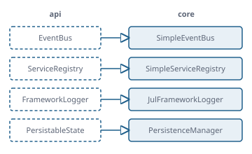

Der Unterbau, auf dem jede App läuft
Funktionsübersicht für die Präsentation des envisionz-Frameworks, Stand 28.09.2026. Die Standardumsetzungen der Verträge aus framework-api, ohne Oberfläche und nur auf dem JDK: App-Verzeichnis über den ServiceLoader, Ereignisbus, Dienstverzeichnis, Protokoll, Sicherung des Arbeitsbereichs mit StAX, dazu drei Hilfen für Dateien und Ströme und ein kleiner JSON-Leser. Je Baustein: Zweck, Methoden, Einsatz im Framework, Anwendungen, Beispiele. Die Beispiele sind gekürzt.

Grundsätze des Moduls
java.util.logging für das Protokoll, ServiceLoader für die Apps. Einzige Projektkante ist framework-api.AppRegistry.discover(); Einzelstarter umgehen sie mit register(desc, HelloApp::new).AppRegistry.all() ordnet nach Kennung. Auf der JVM und im native-image-Abbild wäre die Fundreihenfolge verschieden, und in einer Leiste nur aus Symbolen sieht eine verschobene App aus wie eine fehlende.IOException mit Ursache an; eine unbekannte Formatversion wirft, statt geraten zu werden.path:… werden relativ zur XML-Datei gesichert und beim Laden wieder absolut; geschrieben wird atomar über eine temporäre Datei.App-Verzeichnis envisionz.core.registry
AppRegistry – welche Apps es gibt und wie man eine neue Instanz bekommt
discover() lädt alle Apps über den ServiceLoader und merkt sich je App einen Beschreiber und eine Fabrik; beim Öffnen eines Reiters entsteht über die Fabrik eine frische Instanz. register trägt eine App ohne Reflexion von Hand ein. all() ist die einzige Stelle, an der die Reihenfolge von Menü und Leiste entsteht.
Methoden
AppRegistry.discover(),discover(ClassLoader)register(AppDescriptor, Supplier<App>)→AppRegistry(verkettbar)all()→List<AppEntry>nach Kennung,findById(id),newInstance(id)record AppEntry(descriptor, factory)
Eingesetzt in
Wofür
Das Mehr-App-Programm findet alle Apps auf dem Klassenpfad; ein Einzelstarter trägt genau eine App ein; die Einstellungs-App listet die Apps für ihre Startverzeichnisse.
Beispiel 1 – Einzelstarter ohne Reflexion (so in launcher-hello-standalone)
AppRegistry registry = new AppRegistry()
.register(new HelloApp().descriptor(), HelloApp::new);Beispiel 2 – alle Apps finden und eine öffnen
AppRegistry reg = AppRegistry.discover();
for (AppRegistry.AppEntry e : reg.all()) System.out.println(e.descriptor().id());
App neu = reg.newInstance("charts");discover() gefundene App-Klasse einen Eintrag in der Reflexionskonfiguration, weil die Fabrik getDeclaredConstructor().newInstance() ruft.Ereignisbus und Dienstverzeichnis envisionz.core.events · envisionz.core.services
SimpleEventBus und SimpleServiceRegistry
Der Bus stellt synchron auf dem veröffentlichenden Faden zu, nach dem exakten Laufzeittyp des Ereignisses, in Anmeldereihenfolge. Er iteriert über einen Schnappschuss (ein Empfänger darf sich während der Zustellung abmelden) und fängt Laufzeitfehler je Empfänger ab: die übrigen bekommen das Ereignis trotzdem, der Fehler geht als Warnung ins Protokoll. Das Dienstverzeichnis ist eine ConcurrentHashMap von Typ zu Umsetzung.
Methoden
new SimpleEventBus():publish(E),subscribe(Class<E>, Consumer<E>)new SimpleServiceRegistry():register,get→Optional,unregister
Eingesetzt in
Wofür
Übergabe von Tabellen zwischen Apps, FocusAppEvent an den Wirt, der Hex-Betrachter als Dienst.
SwingUtilities.invokeLater auf den EDT wechseln: der Bus wechselt keinen Faden.Arbeitsbereich sichern und laden envisionz.core.persistence
PersistenceManager – Fassade mit Pfadrelativierung und Formatprüfung
Beim Sichern werden alle Eigenschaften mit dem Präfix path: (Reiter, Abschnitte, Einträge) relativ zur XML-Datei abgelegt, solange das Ergebnis nicht mit mehr als drei ../ beginnt; sonst und bei verschiedenen Laufwerken bleibt der Pfad absolut. Danach werden die Originalwerte zurückgesetzt, auch im Fehlerfall. Beim Laden werden relative Pfade wieder absolut, und StateMigrator prüft die Formatversion.
Methoden
new PersistenceManager():save(PersistableState, Path),load(Path)→PersistableStatePATH_PREFIX = "path:"StateMigrator.migrate(state)– nur „1.0“; leer gilt als 1.0, alles andere wirftIllegalStateException
Eingesetzt in
Wofür
Einen Arbeitsbereich samt Projektordner auf einen anderen Rechner mitnehmen; alte Dateien erkennen, statt sie falsch zu deuten.
Beispiel
PersistenceManager pm = new PersistenceManager();
pm.save(state, Path.of("sitzung.xml"));
PersistableState zurueck = pm.load(Path.of("sitzung.xml"));StaxStateWriter, StaxStateReader – das XML-Format
Handgeschriebenes StAX, UTF-8, mit zwei Leerzeichen eingerückt: <envisionz-state version savedAt>, darin <tabs>/<tab type title> mit <properties>, <section name> und <items>/<item>, am Ende <activeTab>. Der Schreiber schreibt erst in eine temporäre Datei im selben Ordner und verschiebt sie dann mit ATOMIC_MOVE (Rückfall: gewöhnliches Verschieben). Der Leser schaltet DTD und äußere Entitäten ab und nimmt unbekannte Eigenschaften mit.
Methoden
write(state, Path),write(state, OutputStream)(Strom bleibt offen)read(Path),read(InputStream)
Eingesetzt in
Wofür
Ein Absturz während des Sicherns hinterlässt keine halb geschriebene Datei; die Datei bleibt von Hand lesbar und vergleichbar.
Protokoll envisionz.core.logging
JulFrameworkLogger – FrameworkLogger auf java.util.logging
configure wird einmal beim Start gerufen: setzt den LogManager zurück, hängt Konsole und eine rotierende Datei an (<name>-%g.log, 10 MB je Datei, 10 Dateien) und einen Frühpuffer für bis zu 1000 Meldungen. Der Frühpuffer fängt die Startmeldungen auf, bevor die Protokollkonsole der Oberfläche steht; drainEarlyBuffer() liefert sie nach und schaltet den Puffer ab. Die Zeitstempel der Datei stehen in Locale.ROOT, Stapelauszüge kommen mit.
Methoden
JulFrameworkLogger.configure(Path logFile, Level)– einmalig;null= nur Konsolenew JulFrameworkLogger(String | Class),forClass,forNamedrainEarlyBuffer()→List<LogRecord>
Eingesetzt in
Wofür
Nachvollziehen, was beim Start und im Betrieb der EXE passiert ist, die kein Konsolenfenster hat.
Beispiel – so in FrameworkBootstrap
JulFrameworkLogger.configure(workspaceDir.resolve("logs").resolve(appName + ".log"), Level.INFO);
FrameworkLogger logger = new JulFrameworkLogger("envisionz");Dateien und Ströme envisionz.core.io
Schreibstrom – aus einem Schreiber einen Leser machen
Der Erzeuger schreibt in einem eigenen Daemon-Faden in ein Rohr mit 1 MiB Puffer, der Verbraucher liest daraus. Ist das Rohr voll, wartet der Erzeuger. So muss kein Zwischenergebnis ganz im Speicher liegen; ein byte[] fasst höchstens 2 GiB, ein DVD-Titelsatz hat knapp drei. Scheitert der Erzeuger, wirft der nächste read eine IOException mit der Ursache, auch bei einem Error im Schreibfaden.
Methoden
new Schreibstrom(Schreiber, String fadenname)– ist einInputStreamSchreiber.schreibe(OutputStream)(funktionale Schnittstelle)read,available,close()(wartet höchstens 500 ms auf den Faden)
Eingesetzt in
Wofür
Videoströme aus DVD-Titelsätzen trennen und weiterverarbeiten, ohne Gigabyte in den Speicher zu legen.
Beispiel – so in app-forensik
try (InputStream ein = new Schreibstrom(aus -> quelle.videoAus(aus), "Bildstrom-Trenner")) {
// ein.read(...) zieht, solange der Erzeuger schreibt
}Programmordner – wo das Programm liegt und wohin Zwischenspeicher dürfen
Im native-image der Ordner neben der EXE, im JVM-Lauf user.dir (Entscheidung des Eigners). tmpOrdner legt einen Unterordner unter <Programmordner>/tmp an; ist dort kein Schreibrecht, weicht er nach ~/.<appName>/tmp/… aus und hinterlegt den Grund. raeumeAuf entfernt Dateien, die länger als die angegebene Zahl Tage unberührt sind. Ein Zwischenspeicher ist nie die Quelle.
Methoden
programmordner(),tmpOrdner(appName, name)→Pathrueckfallgrund()(null, solange nicht ausgewichen),raeumeAuf(ordner, tage)→ Anzahl
Eingesetzt in
Wofür
Zwischenspeicher für eingelesene Messdaten, die beim nächsten Start schneller da sind und nach 90 Tagen verschwinden.
Beispiel – so in app-epds
Path ordner = Programmordner.tmpOrdner(APP, "epds");
int weg = Programmordner.raeumeAuf(ordner, 90);
String ausweich = Programmordner.rueckfallgrund(); // einmal in die StatuszeileDateibetrachter – ein Dienst, der eine Datei byteweise zeigt
Die Schnittstelle, über die sich der Hex-Betrachter im Dienstverzeichnis anmeldet. Eine andere App kann ihm eine Datei reichen, ohne ihn zu kennen; ist er nicht angemeldet, ist das eine Auskunft, kein Fehler.
Methoden
zeige(Path datei)
Eingesetzt in
Wofür
Aus dem Katalog des HDF5-Lesers eine Datei im Hex-Betrachter öffnen.
JSON lesen und schreiben envisionz.core.json
Json – ein kleiner Leser und Schreiber auf java.base
Wertebaum aus gewöhnlichen Java-Typen: LinkedHashMap für Objekte (Reihenfolge bleibt), List, String, Long und Double, Boolean, null. Die Ausgabe ist zeichengleich zu Pythons json.dump(…, indent=2, ensure_ascii=False), damit erzeugte Konfigurationsdateien Zeile für Zeile gegen frühere Python-Ergebnisse gehalten werden können.
Methoden
Json.lesen(String)→Object; wirftIllegalArgumentExceptionmit PositionJson.schreiben(Object)→String
Eingesetzt in
Wofür
Konfigurationsdateien lesen und schreiben, ohne eine JSON-Bibliothek einzubinden.
Beispiel
Map<?, ?> cfg = (Map<?, ?>) Json.lesen(Files.readString(pfad));
Files.writeString(pfad, Json.schreiben(cfg));Einsatzmatrix im Framework
Welche Module welche Teile heute unmittelbar nutzen, im Quelltext gezählt (ohne Proben). Mittelbar läuft jede App über den Wirt durch Verzeichnis, Bus, Dienste, Protokoll und Sicherung.
| Modul | App-Verzeichnis | Bus, Dienste | Sicherung | Protokoll | Schreibstrom | Programmordner | Dateibetrachter | Wofür |
|---|---|---|---|---|---|---|---|---|
| framework-swing | ● | ● | ● | ● | Wirt: Start, Menü, Leiste, Arbeitsbereich | |||
| launcher-multi, -hello-standalone, -eqnparser-standalone | ● | Apps finden oder von Hand eintragen | ||||||
| app-settings | ● | Startverzeichnisse je App | ||||||
| app-epds | ● | Zwischenspeicher der Messdaten | ||||||
| app-forensik | ● | Videoströme ohne Gesamtpuffer | ||||||
| framework-restore | ● | Sprungsuche im Bildstrom | ||||||
| app-fileanalysis | ● | Hex-Betrachter anmelden | ||||||
| app-hdf5reader | ● | Datei an den Hex-Betrachter reichen |
Json hat heute keinen Aufrufer außerhalb der Proben. framework-fileformats führt nach Entscheidung des Eigners (2026-09-23) einen eigenen kleinen Leser für Avro-Schemata, weil es nicht an core hängt; app-digitizer hat einen eigenen für seine *.digi.json-Dateien.